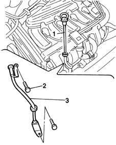
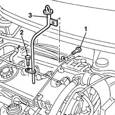

1084A16 oil dip stick pipe - r r
- Path
- Procedures > 10 ENGINE UNIT > 1084 ENGINE LUBRICATION SYSTEM > 1084A indicators/check devices > 1084A16 oil dip stick pipe - r r
- Kind
- repair procedure (removal / refitting; the operation number is the code)
- Applies to
- all engines; all production periods
- Interactive page
- https://sloeber94.github.io/elrnDB-fMltpl/en/#/2891315
Applies to: engines: 1.6 16v; all production periods
 Removing
Removing
 Refitting
RefittingOpen the bonnet lid.
1. Remove the engine oil dipstick by withdrawing it from the rigid pipe.
2. Undo the rigid pipe bolts.
3. Remove the pipe from the engine compartment.

Applies to: engines: 1.6 16v; all production periods
Refitting
RemovingCheck the condition of the rigid pipe.
Replace the rubber seal on the end of the pipe.
Fit the pipe into its seat.
Tighten the pipe bolts.
Refit the engine oil dipstick.
Close the bonnet lid.
Applies to: engines: 1.9 JTD 8V; all production periods
Removing
Refitting1016A10 sound-proofing cover - r + r
Place the vehicle on a lift.
Raise the car.
1. Undo the lower bolt of the engine oil dipstick tube.
Lower the vehicle.
2. Undo the upper bolt securing the tube to the bracket.
3. Remove the tube for the engine oil dipstick from the upper part of the vehicle.

Applies to: engines: 1.9 JTD 8V; all production periods
Refitting
RemovingFit the engine oil dipstick pipe and tighten the upper bolt.
Raise the lift.
Tighten the lower bolt.
Lower the lift and remove the vehicle.
Topics linked from this page (1)
Topics that link to this page (8)
- 1020A20 crank case oil sump - r + r clean seals for sealant application
- 1020D16 front crankshaft oil seal cover - r+r and replace gaskets for versions with airconditioner
- 1028H11 piston connecting rod set - r r
- 1028H12 set of pistons with connecting rods - r r with cylinder head/s removed
- 1056B60 single fuel manifold pipe, with injectors - r + r
- 1072B10 inlet manifold - r + r and replace seal
- 1072B50 sleeves connecting air capacity box to inlet manifold is - r+r
- 4130B32 power steering pump mount - r r